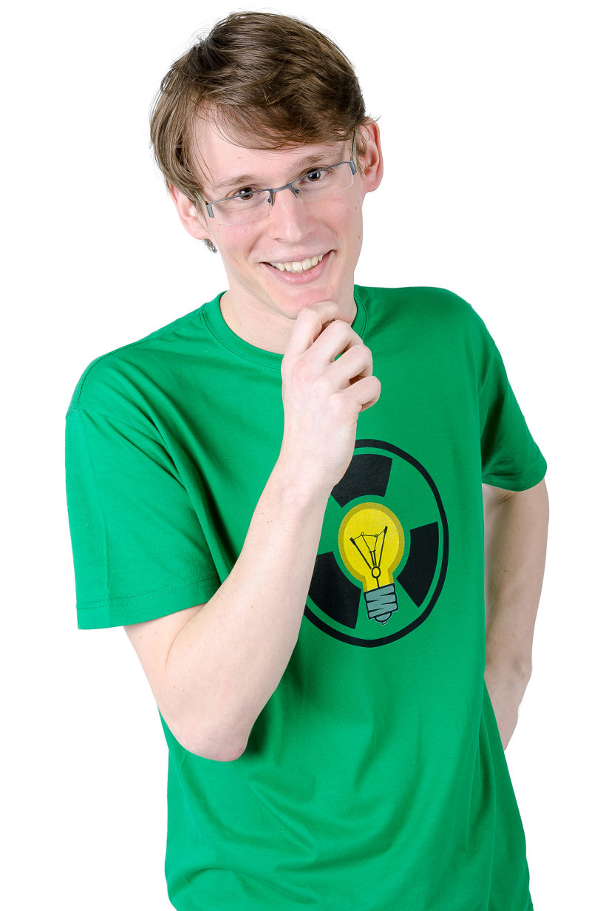
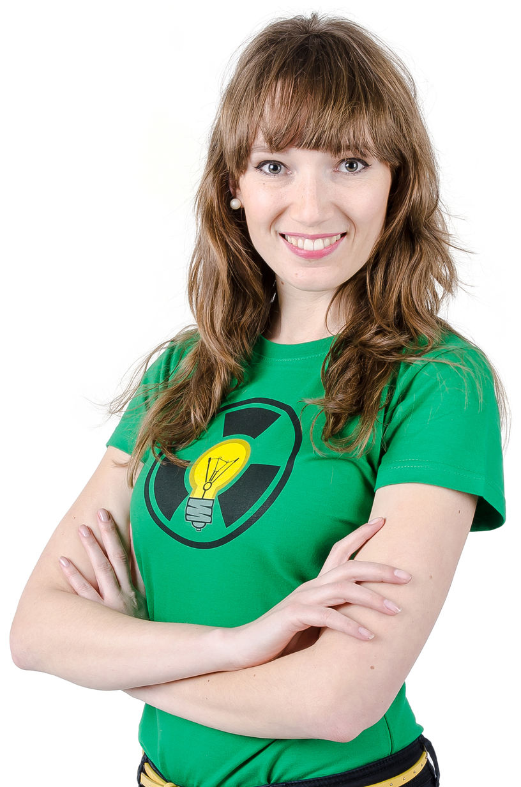
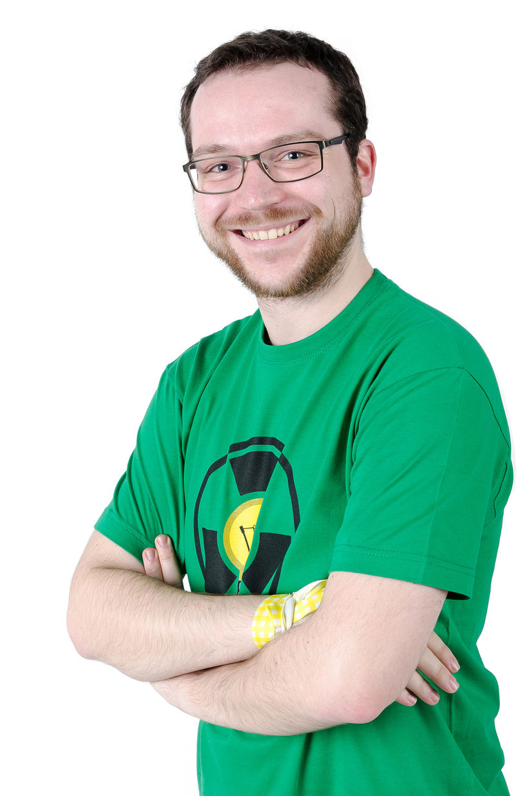
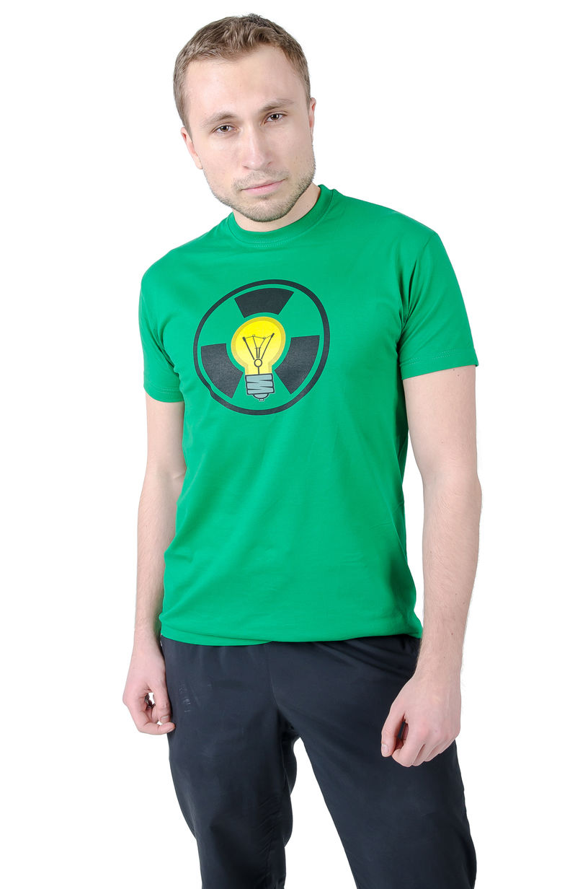
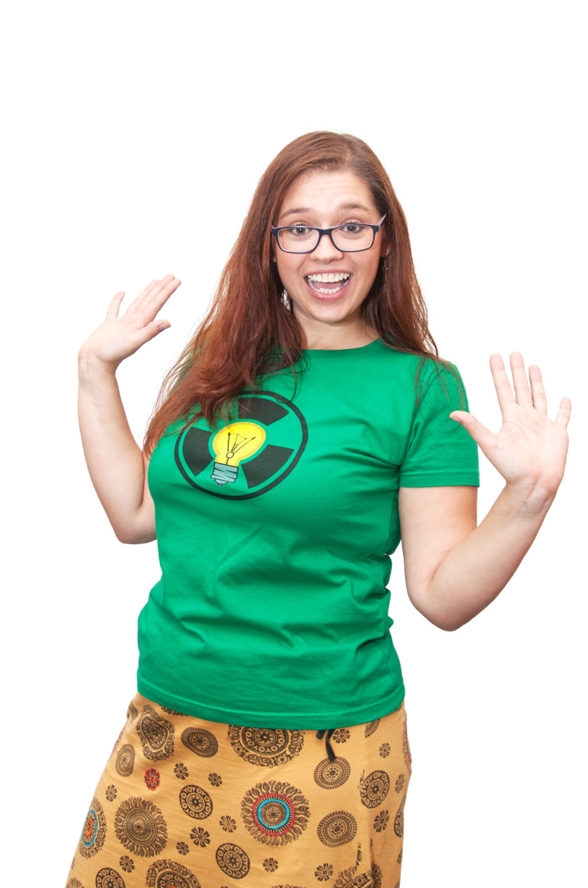
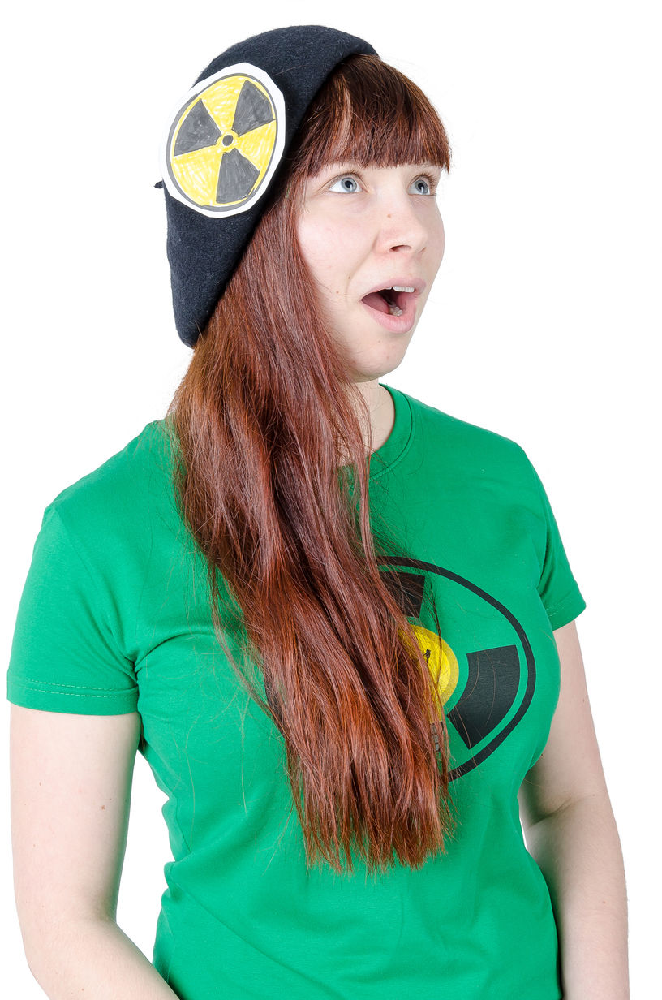
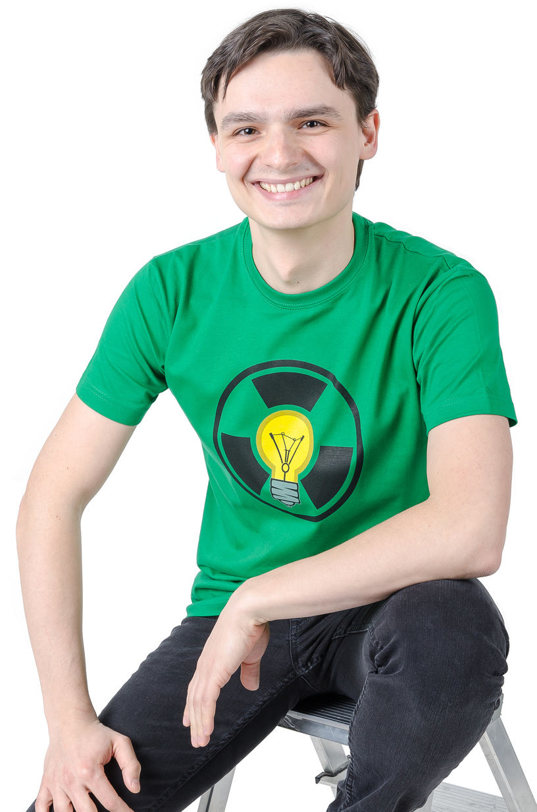

Poločas nápadu
Jsme pražská skupina mladých lidí, kteří se věnují divadelní improvizaci, hrajeme improvizační představení pro veřejnost a pomocí dovedností získaných z Improligy pracujeme na svém rozvoji. V tuhle chvíli je nás víc jak 14. Improvizaci, zkráceně impro, se věnujeme od dubna 2015.
Přijďte se na nás podívat
- Ve čtvrtek 8. února budeme hrát improvizační zápas proti týmu ImproTi v Divadle Bez Hranic ve Vršovicích.
Kontakt
Napište nám třeba jenom ahoj na adresu
ahoj@polocas-napadu.cz a nebo nás kontaktujte
na sociálních sítích: Facebook | Twitter
Spolek
Poločas nápadu z. s.Holandská 1008/13
101 00 Praha
IČO: 5758661
Členové
-
Daniel Kádner
-
Dominika Jírová
-
Honza Formánek
-
Marcel Mika
-
Markéta Gregorová
-
Míša P.
-
Ondřej Svoboda
Jasně, je nás víc, jen jsme neměli čas sesbírat informace o všech našich hercích a členech, protože náš tým roste v čase i prostoru. Chceš poznat všechny a doplnit si sbírku pokémonů? Stav se na nějakém z našich představení a přijď si s náma pokecat!
Repertoár impro formátů
Improvizační zápas
Dva impro týmy proti sobě, představení připomíná malý hokejový zápas. Diváci zadávají témata a po každé hře hlasují který tým se jim líbil více. Na místě je rozhodčí, který kontroluje dodržování improvizačních pravidel podle České improvizační ligy. Vítěz může být jenom jeden.
- Celovečerní
- 3 - 4 herci za každý tým
Improshow
Volné, tematické a nebo na míru zahrané impro představení složené z krátkých příběhů inspirovaných tématy od diváků, celým večerem provází konferenciér. Pohyb, poezie, zpěv? Žádný problém.
- 30 - 240 minut
- 3 - 6 herců
Úplně obyčejné zprávy
Improvizované večerní zprávy typické televizní stanice. Diváci zadávají věty, které slouží jako inspirace pro všechny reportáže. Hrají dva herci, ale uvidíte mnoho postav. Dynamické
- 30 - 60 minut
- 2 herci
Motel
Tři různé příběhy rozdělené na tři části v jednom motelovém pokoji. Herci mezi jednotlivými částmi posouvají příběh samostatnými vstupy. Hraje 6 hráčů, vždy dva do každého příběhu.
- 45 - 60 minut
- 6 herců
Kolik jsme toho už odehráli
Co už jste prošvihli
- V pátek 8. prosince jsme vyhráli improvizační zápas s týmem VIP v Divadle Bez Hranic ve Vršovicích.
- V sobotu 18. listopadu 2017 jsme zahráli odpolední improshow pro děti v klubu Klondike v Peci pod Sněžkou.
- V pátek 17. listopadu 2017 jsme zahráli večerní improshow v klubu Klondike v Peci pod Sněžkou.
- V pondělí 6. listopadu jsme prohráli improvizační zápas s týmem KIŠ v Divadle Bez Hranic ve Vršovicích.
- Ve čtvrtek 8. června 2017 jsme uzavřeli divadelní sezónu v Carpe Diem naší TV Improshow.
- V pátek 2. června 2017 jsme hráli v A Maze In Tchaiovně Impro Battle se skupinou Blood Love Rhethorics.
- V pátek 26. května 2017 jsme se umístili čtvrtí ve slovenské soutěži Improliga 2017 v Žilině.
- Ve čtvrtek 25. května 2017 jsme hráli zápas se skupinou KIŠ ve studentském klubu Celetná.
- V pátek 12. května 2017 jsme remizovali zápas se skupinou Dotiky v Lužánkách v Brně.
- 24. března 2017 jsme vyhráli improvizační zápas nad pražskou skupinou VIP v Karlínském spektru
- Zápas s Divadlem Podivín plánovaný na sobotu 4. února 2017 jsme museli zrušit kvůli technickým potížím divadelního prostoru v Libereci.
- V sobotu 21. ledna 2017 budeme hrát v Carpe Diem na Floře Úplně obyčejné zprávy.
- 16. prosince 2016 jsme měli v Carpe Diem speciální vánoční improshow.
- 29. listopadu 2016 jsme remizovali v improvizačím zápase s hradeckou skupinou Bizoni v AC Klubu
- 26. listopadu 2016 jsme vyhráli improvizační zápas nad plzeňskou skupinou Improstor ve Stanici techniků DDM Praha
- 19. listopadu 2016 jsme v Cindě na Císařské louce zahráli poprvé Filmovou improshow
- 18. listopadu 2016 jsme hráli v Carpe Diem šestý běh Příběhů z motelu
- 30. října 2016 jsme si ve Skautském institutu zahráli longformu Úplně normální zprávy
- 21. října 2016 jsme v Carpe Diem zahráli pátý běh Příběhů z motelu
- 5. října 2016 jsme hráli improshow na Studentském Jarmarku v Klubu Celetná
- 8. července 2016 jsme si dali v Carpe Diem Impro Battle se skupinou Stře.L.I.
- 16. září 2016 jsme v Carpe Diem zahráli čtvrtý běh Příběhů z motelu
- 10. června 2016 jsme v Carpe Diem zahráli třetí běh Příběhů z motelu
- 5. června 2016 jsme ve Skautském institutu hráli zápas s týmem V.I.P.
- 30. května 2016 jsme si zahráli v Café AdAstra na téma sousedských vztahů
- 8. května jsme hráli zápas s týmem KOSA ve Skautském institutu.
- 5. května jsme v Carpe Diem hráli Příběhy z motelu.
- 22. dubna 2016 jsme odehráli první zápas s týmem L.I.K.E. na Klamovce
- 30. března 2016 jsme odehráli poprvé Příběhy z motelu.